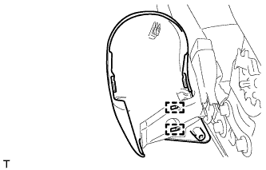
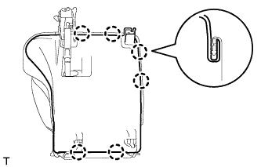
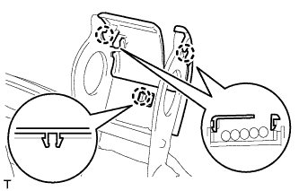
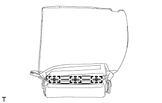

ЗАДНЕЕ СИДЕНЬЕ № 1 В СБОРЕ (для моделей с опускаемым сиденьем раздельного типа 60/40 с правой стороны) > РАЗБОРКА |
| 1. СНИМИТЕ ОТКИДНУЮ КРЫШКУ ЛЕВОГО ЗАДНЕГО СИДЕНЬЯ № 1 |
 |
Выверните 2 винта.
С помощью съемника молдингов отцепите 2 захвата.
Переместите крышку в направлении, указанном на рисунке стрелкой, чтобы освободить направляющую.
|  |
Освободите 2 крепления и снимите крышку.
| 2. СНИМИТЕ ОТКИДНУЮ КРЫШКУ ПРАВОГО ЗАДНЕГО СИДЕНЬЯ № 1 |
Выверните 2 винта.
С помощью съемника молдингов расцепите 2 захвата.
Переместите крышку в направлении, указанном на рисунке стрелкой, чтобы освободить направляющую, и снимите крышку.
| 3. СНИМИТЕ ШТИФТ РЫЧАГА ОТПИРАНИЯ НАПРАВЛЯЮЩЕЙ СИДЕНЬЯ В СБОРЕ |
 |
С помощью отвертки снимите фиксатор.
Снимите штифт, как показано на рисунке.
| 4. СНИМИТЕ НАПРАВЛЯЮЩУЮ ШТИФТА ПЕТЛИ ЗАДНЕГО СИДЕНЬЯ |
Освободите 4 захвата и снимите направляющую штифта.
| 5. СНИМИТЕ ПЕТЛЮ ЛЕВОГО ЗАДНЕГО СИДЕНЬЯ № 1 В СБОРЕ |
С помощью отвертки снимите разрезное уплотнение.
Снимите штифт и петлю.
| 6. СНИМИТЕ ПЕТЛЮ ПРАВОГО ЗАДНЕГО СИДЕНЬЯ № 1 В СБОРЕ |
С помощью отвертки снимите разрезное уплотнение.
Снимите штифт.
|  |
С помощью отвертки расцепите 6 захватов.
Выверните 4 винта.
Отсоедините ручку отпускания регулятора наклона от нижней крышки.
Поднимите нижнюю крышку.
С помощью отвертки снимите пружину шарового шарнира стойки сиденья.
Отсоедините стойку сиденья.
Снимите петлю сиденья и стойку сиденья как единый узел.
| 7. СНИМИТЕ СТОЙКУ ЗАДНЕГО СИДЕНЬЯ В СБОРЕ |
| 8. СНИМИТЕ КРАЕВОЕ УКРЕПЛЕНИЕ ПОДУШКИ ЗАДНЕГО СИДЕНЬЯ |
Снимите защитный элемент с каркаса подушки.
| 9. СНИМИТЕ ПОДКЛАДКУ ЗАМКА НОЖКИ СКЛАДЫВАЮЩЕГОСЯ СИДЕНЬЯ |
Снимите подушку с защитного элемента.
| 10. СНИМИТЕ ОПОРНУЮ ПРУЖИНУ ПОДУШКИ ЗАДНЕГО СИДЕНЬЯ |
Снимите пружину с каркаса подушки сиденья.
| 11. СНИМИТЕ НИЖНЮЮ КРЫШКУ ПОДУШКИ ПРАВОГО ЗАДНЕГО СИДЕНЬЯ В СБОРЕ |
Снимите нижнюю крышку.
| 12. СНИМИТЕ НАКЛАДКУ ПЕТЛИ ЛЕВОГО ЗАДНЕГО СИДЕНЬЯ № 2 |
|  |
Отцепите 3 захвата и снимите обивку.
| 13. СНИМИТЕ НАКЛАДКУ ПРАВОЙ ПЕТЛИ ЗАДНЕГО СИДЕНЬЯ № 2 |
Отцепите 3 захвата и снимите обивку.
| 14. СНИМИТЕ ЗАМОК РЕМНЯ БЕЗОПАСНОСТИ ЛЕВОГО ЗАДНЕГО СИДЕНЬЯ № 1 В СБОРЕ |
 |
Отверните гайку и снимите замок ремня.
| 15. СНИМИТЕ ОБИВКУ ПОДУШКИ СИДЕНЬЯ ВМЕСТЕ С ПОДУШКОЙ |
Срежьте закрепки и снимите коврик с подушки сиденья.
| *1 | Стяжка |
Снимите 3 витковые пружины и обивку подушки сиденья с подушкой.
| 16. СНИМИТЕ ВНУТРЕННЕЕ КРАЕВОЕ УКРЕПЛЕНИЕ ПОДУШКИ ПРАВОГО ЗАДНЕГО СИДЕНЬЯ |
Срежьте закрепки и снимите коврик с подушки сиденья.
| *1 | Стяжка |
| 17. СНИМИТЕ ОБИВКУ ПОДУШКИ РАЗДЕЛЬНОГО ЗАДНЕГО СИДЕНЬЯ |
Снимите витковые пружины и обивку подушки сиденья с подушки сиденья.
| 18. СНИМИТЕ ОБИВКУ СПИНКИ ЗАДНЕГО СИДЕНЬЯ |
 |
С помощью отвертки освободите 4 захвата и снимите обивку.
| 19. СНИМИТЕ ПОДУШКУ СПИНКИ ПРАВОГО СИДЕНЬЯ № 1 |
Отсоедините крепежную ленту и откройте крышку.
| *1 | Крепежная лента |
|  |
Снимите 3 витковые пружины.
Откройте 2 крепления, а затем откройте обивку спинки сиденья.
Снимите подушку спинки сиденья.
| 20. СНИМИТЕ КРЫШКУ ЗАЩЕЛКИ ЗАМКА СПИНКИ ЗАДНЕГО СИДЕНЬЯ |
 |
С помощью отвертки расцепите захват и направляющую и снимите крышку.
| *1 | Защитная клейкая лента |
| 21. СНИМИТЕ РЫЧАГ ЗАМКА ПРАВОГО ЗАДНЕГО СИДЕНЬЯ В СБОРЕ |
 |
Выверните 2 винта.
 |
Отсоедините трос в порядке, показанном на рисунке, и снимите рычаг.
| 22. СНИМИТЕ ДЕРЖАТЕЛЬ ПОДГОЛОВНИКА ЗАДНЕГО СИДЕНЬЯ № 1 В СБОРЕ |
Освободите 4 захвата и снимите 2 держателя.
| 23. СНИМИТЕ ОБИВКУ СПИНКИ СИДЕНЬЯ ВМЕСТЕ С ПОДУШКОЙ |
Освободите 2 крепления и снимите обивку спинки сиденья с подушкой.
| 24. СНИМИТЕ ОБИВКУ СПИНКИ РАЗДЕЛЬНОГО ЗАДНЕГО СИДЕНЬЯ |
Снимите 2 крепежные ленты.
| *1 | Крепежная лента |
Снимите витковые пружины и обивку спинки сиденья с подушки спинки сиденья.
| 25. СНИМИТЕ ТРОС № 1 ФИКСАЦИИ ЗАДНЕГО СИДЕНЬЯ В СБОРЕ |
Освободите 2 зажима троса, отсоедините трос и снимите его.
| 26. СНИМИТЕ ВНУТРЕННЮЮ ОТКИДНУЮ КРЫШКУ ЛЕВОГО ЗАДНЕГО СИДЕНЬЯ |
Освободите 2 захвата и 2 направляющие, а затем снимите щиток.
| 27. СНИМИТЕ ВНУТРЕННЮЮ ОТКИДНУЮ КРЫШКУ ПРАВОГО ЗАДНЕГО СИДЕНЬЯ |
Освободите 2 захвата и 2 направляющие, а затем снимите щиток.
| 28. СНИМИТЕ ВНУТРЕННЮЮ ОТКИДНУЮ КРЫШКУ ЛЕВОГО ЗАДНЕГО СИДЕНЬЯ |
 |
Освободите 2 направляющие и снимите крышку.
| 29. СНИМИТЕ ВНУТРЕННЮЮ ОТКИДНУЮ КРЫШКУ ПРАВОГО ЗАДНЕГО СИДЕНЬЯ |
Освободите 2 направляющие и снимите крышку.
| 30. СНИМИТЕ РАМУ СПИНКИ ПРАВОГО ЗАДНЕГО СИДЕНЬЯ В СБОРЕ |
Выверните 4 болта и снимите раму спинки сиденья.
| 31. СНИМИТЕ ТРОС ФИКСАЦИИ ПРАВОГО СКЛАДЫВАЮЩЕГОСЯ СИДЕНЬЯ № 1 В СБОРЕ |
Обрежьте 2 бандажа жгута проводов.
Освободите 3 зажима троса, отсоедините трос и снимите его.